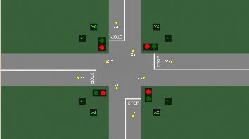

Schemat E. 
|
||||||||||||||||||||
Obiekt ten przedstawia model skrzy¿owania. Pojazdy na skrzy¿owaniu poruszaj± siê na wprost, bez mo¿liwo¶ci skrêtu. Ruch regulowany jest sygnalizacj± ¶wietln±. ¦wiat³a dla kierunków jazdy w górê i w dó³ sterowany jest za pomoc± Z1 (0 - czerwone, 1 - zielone), natomiast dla kierunków jazdy w lewo i w prawo za pomoc± Z2 (0 - czerwone, 1 - zielone). Na drodze umieszczone s± czujniki ruchu (X1...X8). Ramka danych wyj¶ciowych (stan obiektu).
Ramka danych wej¶ciowych (steruj±cych).
Sterowanie klawiatur±. |
||||||||||||||||||||